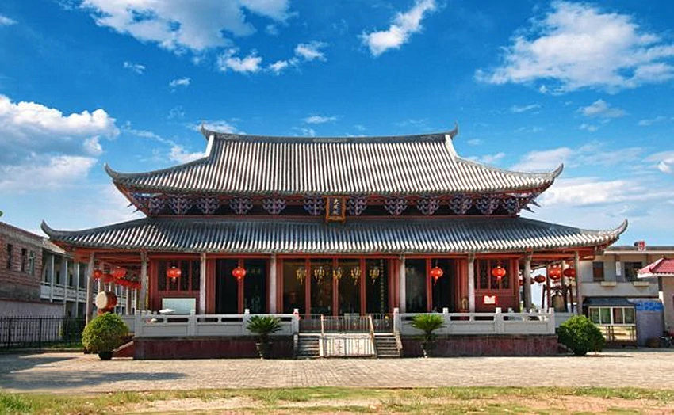
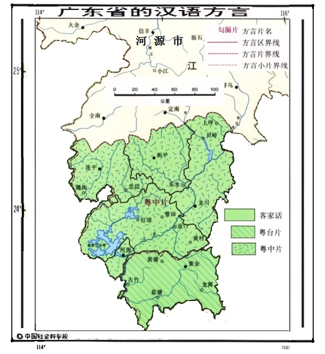

历史文化

客家文化
人文历史
河源是客家人最早居住的地方，是名符其实的“客家古邑”，是客家文化的重要起源地之一，也是岭南文化的重要发祥地之一。客家历史悠久，文化源远流长。千百年来，河源客家人以东江流域为聚居地，形成了以东江为情感纽带的独具个性的客家文化。
和平邑人徐旭曾所著《丰湖杂记》是中国系统论述客家历史文化的开山之作 。
民间艺术
客家民间艺术多姿多彩，如客家山歌、龙川杂技、紫金花朝戏，东江客家美食，龙川杂技、紫金花朝戏、连平采茶戏、和平纸马舞、舞春牛、船灯舞、花灯舞、客家婚庆等等，以及以“重名节、重孝悌、重文教、重信义”著称的客家人精神。河源每个县区都有客家歌舞团，紫金县的客家花朝戏被列为“国家非物质文化遗产”，连平县的忠信客家花灯被评为“广东省非物质文化遗产”，龙川县的杂技团是全国首个县级杂技团，和平县的采茶剧团有着汉剧和采茶剧相结合的戏韵
。
建筑民居
河源民居建筑皆以宗族、家族为单位建筑的住宅群，屋形多为围龙屋、四角楼、四合院和吊脚楼等客家屋式。其中河源地区的围龙屋是以半月形为主体，四角楼是以炮楼式为主体，四合院是以天井采光为主体，吊脚楼是以走马楼为主体。除吊脚楼属山寨人居住，有着明显的山民建筑特征外，四角楼、四合院建筑内部设计都与半月形围龙屋有着大同小异之处
。
红色文化
河源是中国革命策源地之一，是全国最早开展马克思主义传播的地方之一，是全国最早开展农民运动的地区之一，是全国最早建立农村革命根据地的地方之一，是全国最早建立苏维埃政府的地方之一，是中共东江特委和中共后东特委的所在地，是东江纵队的革命根据地，是粤赣湘边纵队的活跃地区，是广东最早的解放区
截至2016年10月，全市共有烈士纪念设施1975个，其中，烈士墓1863个，纪念碑、亭、塔等112个。河源保存完好且有一定规模的烈士陵园和纪念碑等纪念设施共有20个左右。淞沪抗日和籍烈士纪念碑是全国首座抗日纪念碑
。
语言文化

河源是东江流域客家人的聚居中心，属于客家方言地区
。河源市地处梅州市与广州市之间，河源话受客家语（梅县话）及粤语（广州话）的影响较大。有的词语读音与梅州话相似，有的词语与广州话相近，而河源市内东源、紫金、龙川、连平、和平等各县区之间的方言也有较大差异。但总体上河源市均属于客家方言地区。河源电视台客家话新闻节目及公交报站语言中均使用到了水源音客家话（以龙川佗城话为准）
。
得名缘由
东江自北向南流经河源市区，新丰江从西向东绕城而过，两江在河源市区东面交汇，使得整个河源市区三面环水，因而得名河源。